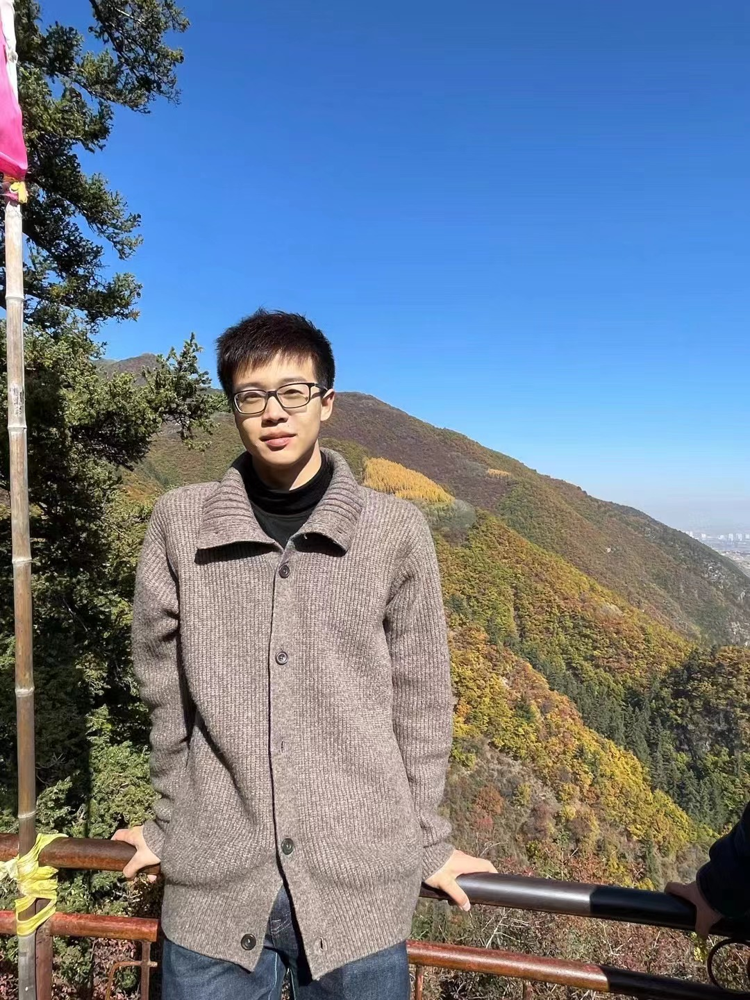
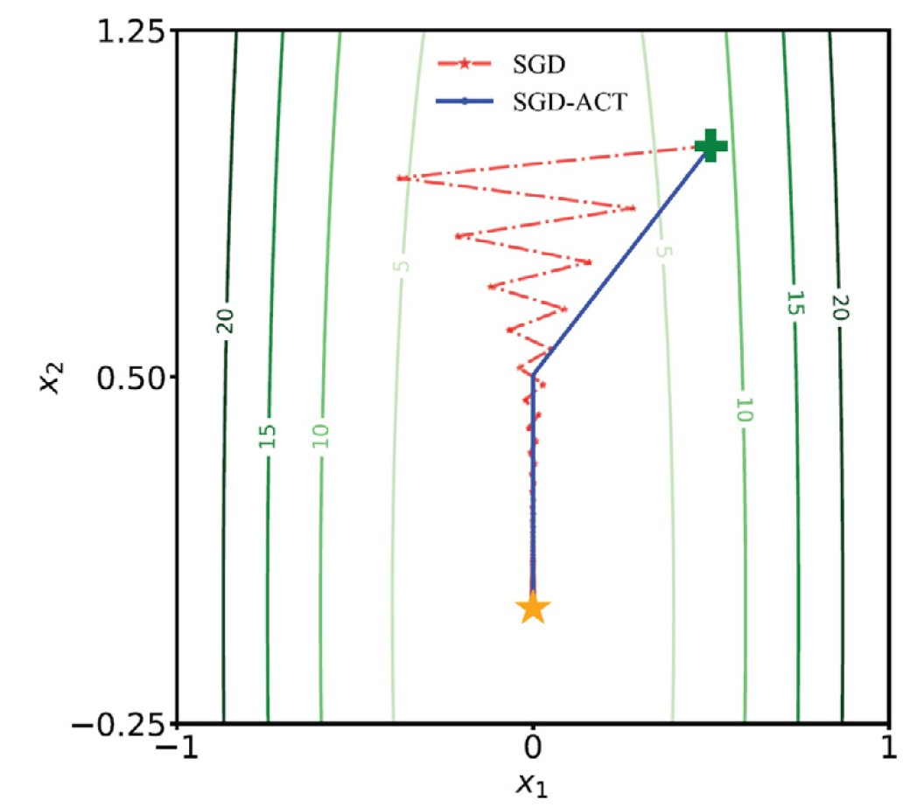

Home
Research
Sport
CV
Email

Chuan Qin 秦川
Technical Staff at Anuttacon
Chuan Qin 秦川
Biography
I'm a technical staff member at Anuttacon... [完整个人简介内容]
Selected Research

The Dawn of Video Generation...
Chuan Qin et al.
Neural Networks
Website
225 stars
Mentoring
Kenkun Liu, CUHK(SZ)
Working Experience
Researcher at International Digital Economy Academy (Apr. 2022 - Apr. 2024)
Honors & Awards
KAUST AI Rising Star, 2025